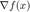

Poblano Toolbox for MATLAB: Overview
Poblano is a toolbox of large-scale algorithms for nonlinear optimization. The algorithms in Poblano require only first-order derivative information (e.g., gradients for scalar-valued objective functions).
Contents
Introduction
Poblano optimizers find local minimizers of scalar-valued objective functions taking vector inputs. Specifically, the problems solved by Poblano optimizers are of the following form:

The gradient of the objective function, , is required for all Poblano optimizers. The optimizers converge to a stationary point,  , where
, where

A line search satisfying the strong Wolfe conditions is used to guarantee global convergence of the Poblano optimizers.
Optimization Methods
The following optimization methods are available in Poblano.
Nonlinear conjugate gradient method (ncg) [4]
- Uses Fletcher-Reeves, Polak-Ribiere, and Hestenes-Stiefel conjugate direction updates
- Restart strategies based on number of iterations or orthogonality of gradients across iterations
- Steepest descent method is a special case
Limited-memory BFGS method (lbfgs) [4]
- Uses a two-loop recursion for approximate Hessian-gradient products
Truncated Newton method (tn) [1]
- Uses finite differencing for approximate Hessian-vector products
Globalization Strategies
Line search methods
- More-Thuente cubic interpolation line search (cvsrch) [3]
Optimization Input Parameters
Input parameters are passed to the different optimization methods using Matlab inputParser objects. Some parameters are shared across all methods and others are specific to a particular method. Below are descriptions of the shared input parameters and examples of how to set and use these parameters in the optimization methods. The Poblano function poblano_params is used by the optimization methods to set the input parameters. See the Optimization Input Parameters documentation for more details.
Optimization Output Parameters
Each of the optimization methods in Poblano outputs a single structure containing fields for the approximate solution, function and gradient values at the solution, and various information about the optimization run (e.g., number of function evaluations, etc.). The Poblano function poblano_out is used by the optimization methods to set the output parameters. See the Optimization Output Parameters documentation for more details.
Checking Gradient Calculations
Analytic gradients can be checked using finite difference approximations. The Poblano function gradientcheck computes the gradient approximations and compares the results to the analytic gradient using a user-supplied objective function/gradient M-file. The user can choose one of several difference formulas as well as the difference step used in the computations. See the Checking Gradient Calculations documentation for more details.
Examples
Poblano provides two example function/gradient M-files:
- example1: simple multivariate function
- example2: more complicated function of a matrix variable
See the Poblano Examples documentation for more details.
Calling a Poblano Optimizer
All Poblano methods are called using the name of the method along with two required arguments and one or more optional arguments. The required arguments are 1) a handle to the function being minimized, and 2) the initial guess of the solution (as a scalar or column vector). For example, the following is a call to the ncg method to minimize the example1 function distributed with Poblano starting with an initial guess of  and using the default ncg parameters.
and using the default ncg parameters.
ncg(@example1, pi/4);
Iter FuncEvals F(X) ||G(X)||/N
------ --------- ---------------- ----------------
0 1 0.70710678 0.70710678
1 6 -0.99999998 0.00017407
2 7 -1.00000000 0.00000000
Parameterize functions can be optimized using Poblano as well. For such functions, the function handle can be used to specify the function parameters. For example, Poblano's example1 function takes an optional scalar parameter as follows.
ncg(@(x) example1(x,3), pi/4);
Iter FuncEvals F(X) ||G(X)||/N
------ --------- ---------------- ----------------
0 1 0.70710678 2.12132034
1 14 -0.99998885 0.01416497
2 16 -1.00000000 0.00000147
Functions taking vectors as inputs can be optimized using Poblano as well. For functions which can take input vectors of arbitrary sizes (e.g., Matlab functions such as sin, fft, etc.), the size of the initial guess (as a scalar or column vector) determines the size of the problem to be solved. For example, Poblano's \texttt{example1} function can take as input a vector (in this case a vector in  ) as follows.
) as follows.
ncg(@(x) example1(x,3), [pi/5 pi/4 pi/3]');
Iter FuncEvals F(X) ||G(X)||/N
------ --------- ---------------- ----------------
0 1 1.65816330 1.26312767
1 5 -0.94404964 0.49911677
2 9 -1.64717576 1.35314598
3 14 -1.82513979 1.19534779
4 19 -2.96660154 0.25769184
5 22 -2.99851295 0.05452749
6 24 -2.99999996 0.00028818
7 26 -3.00000000 0.00000000
The optional arguments are input parameters specifying how the optimization method is to be run. See the Input Parameters documentation for details about the input parameters.)
Acknowledgments
- Dianne O'Leary of the University of Maryland, College Park, provided the Matlab translation of the MINPACK implementation of the More-Thuente line search.
- This product includes software developed by the University of Chicago, as Operator of Argonne National Laboratory.
References
[1] Dembo, R.S. and and Steihaug, T. (1983). Truncated-Newton algorithms for large-scale unconstrained minimization. Mathematical Programming, 26, 190-212.
[2] Golub, G. H. and Loan, C. F. V. (1996). Matrix Computations. Johns Hopkins University Press.
[3] More, J. J. and Thuente, D. J. (1994). Line search algorithms with guaranteed sufficient decrease. ACM Trans. Math. Softw., 20, 286-307.
[4] Nocedal, J. and Wright S. J. (1999). Numerical Optimization. Springer.